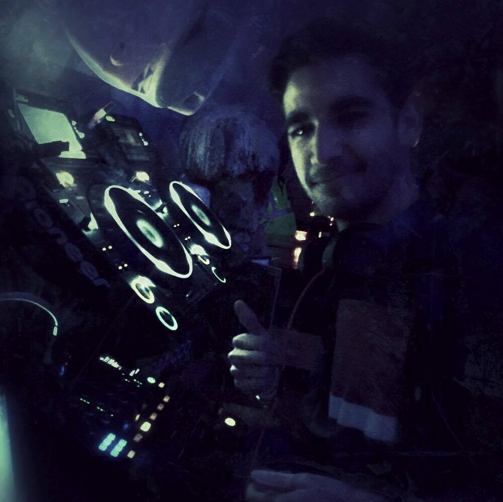

About

Hi, my name is Adam. I am a Canadian who was born/grew up in Monaco.
I am a software developer that enjoys mixing in his free time.
I had my first encounter with DJing back in 2014 when I downloaded the app DJuced and started doing small mashups of 2-3 popular songs and uploading then on Soundcloud for my friend and classmates to listen to.
I got my first controller at the beginning of 2015 (the Hercules DJ Control Instinct), and immediately began mixing at house parties (this was my final year of highschool so we had a lot of parties).
Up until the end of highschool I was the chosen DJ for most house parties and birthday parties that were hosted by my friends, which was something I really enjoyed doing.
Meanwhile, I also started publishing a few mixtapes on Soundcloud as well.
In September 2015 I was off to university at the University of Bath (United Kingdom) to study Computer Science.
After a short break, I eventually picked up where I left off and started DJing at house parties again (late 2015) whenever an opportunity presented itself.
At this point, I started getting bored of the small Hercules controller as it was really targeted at beginners.
I therefore searched for new controllers and ended buying the Pioneer DDJ-SB2 for more serious mixing (still an amateur controller though, but one that would allow me to further improve my skills).
I kept on DJing at house parties, which were much bigger in size compare to the highschool parties we used to do.
In 2016 I eventually got my first opportunity to mix in a club at local student club in Bath (the picture was taken on that night) for the entire night, which lasted a bit over 4 hours with no break.
I thought that it was a very different experience due to the stress of not messing transitions or doing beginners mistake,
which happened from time to time at house parties but that no one ever minded.
However, the satisfaction of finally mixing in a club with proper equipment was worth the wait and the first-time stress.
I got to mix a few more times at the same club during the end of my first year and during my second year of university (2016-2017), as well as more house parties.
In July 2017, I moved to a small town called Bicester as I started a 1-year internship
(this is a 1-year break from univeristy for work experience that is part of program) with the Formula One team Scuderia Toro Rosso.
However, the town being the opposite of an exciting town of students (e.g. there is just a single small night club - it's actually a pub with a dancefloor - in the town),
I stopped DJing during that year.
My plan for the future regarding DJing is to return to university to start DJing again (end of 2018) and start a new series of themed mixtapes (surprise)